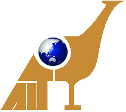

<!DOCTYPE html>
<html lang="en">
<head>
    <meta charset="UTF-8">
    <meta name="viewport" content="width=device-width, initial-scale=1.0">
    <title>University of the Philippines Asian Institute of Tourism</title>
    <link rel="stylesheet" href="contact.css">
    <link rel="stylesheet" href="index.css">
    <link rel="icon" href="images/icons/AIT.png">
</head>

</html>

<body>
  <header>  
  <br>
  <div class="navbar">
  <div class="navbar-background"></div>
        
  <div class="logo">
  <a href="https://ait.upd.edu.ph" target="_blank">Asian Institute of Tourism</a>
  <a href="https://up.edu.ph"></a>
  <a href="https://ait.upd.edu.ph"></a>
  </div>
  <ul class="links">
  <li> <a href="index.html">Home</a> </li>
  <li> <a href="course.html">Academic Programs</a> </li>
  <li> <a href="Professors.html">Faculty and staff</a> </li>
  <li> <a href="facilities.html">Facilities</a> </li>
  <li> <a href="About.html">About</a> </li>
  <li> <a href="contacts.html">Contact Us</a> </li>
  </ul>

  <a href="https://ait.upd.edu.ph" class="action_btn" target="_blank">APPLY NOW</a>
  </div>
  </header>
      <main>
        <div class="bookmark">
          <p>UPAIT \ <span class="bookmarkbold">About</span></p>
        </div>
        <div class="maincontainer">
          <div class="maintext">
            <h1>Purpose</h1>
            <p>
             Given the wide array of website types at our disposal, we were fortunate to select the particular type that aligns with our capabilities and objectives. After careful consideration, we collectively opted for the development of a school or university website, with the distinguished institution being the UP Asian Institute of Tourism. The primary aim of this endeavor is to establish a robust online platform facilitating the seamless dissemination of information, provision of academic resources, fostering communication, and facilitating engagement among students, faculty, staff, prospective students, and the wider community.
            </p>
          </div>
          </div>
        </div>
        <div class="maincontainer">
        <div class="maintext">
          <h1>Appreciation</h1>
             <p>
                We would like to thank Mrs. Rose Anne G. Cochanco, our dedicated professor in IT-WS, for her invaluable guidance and support in completing this case study. Mrs. Cochanco's expertise and encouragement have been instrumental in navigating the complexities of this project and achieving our goals. We are truly fortunate to have such a committed mentor guiding us through our academic endeavors. Thank you, Mrs. Cochanco, for your unwavering dedication and assistance.
            </p>
      </div>
      </div>

        
      <div>
        <footer id="contacts">
          <div class="container">
            <div class="footer-content card">
              <h3>School Contacts</h3>
              <p>Email:<span style ="font-size:13px;font-family:Verdana sans-serif">asianinstituteoftourism.upd@up.edu.ph</span></p>
              <p>Phone:(+63 2) 8 981 8500 extension #2798</p>
              <p>Commonwealth Avenue, Diliman, Quezon City 1101</p>
            </div>

            <div class="footer-content card">
              <h3>Created By:</h3>
              <p>Escala,Harry James M.</p>
              <p>Garcia,Jezkhelei M.</p>
              <p>Santos,John Michael D.</p>
              <p>Kadomura,Ryusei S.</p>
            </div>

            <div class="footer-content card">
              <h3>Follow Us</h3>
              <ul class="social-icons">
                <div style ="text-decoration:underline;">
                <li>
                  <a style="color: black;"
                    href="https://www.facebook.com/Kadomura.zzxczjsk/"
                    target="_blank"
                    ><i class="fab"></i
                  >Ryusei Kadomura</a>
                </li>
                
                <li>
                  <a style="color: black;"
                  href="https://www.facebook.com/harry.escala.3" target="_blank"
                    ><i class="fab"></i
                  >Harry Escala</a>
                </li>
                <li>
                  <a style="color: black;"
                    href="https://www.facebook.com/lei.garcia.1671/"
                    target="_blank"
                    ><i class="fab"></i
                  >Lei Garcia</a>
                </li>
                 <li>
                  <a style="color: black;"
                    href="https://www.facebook.com/profile.php?id=100005118376891"
                    target="_blank"
                    ><i class="fab"></i
                  >John Michael Santos</a>
                </li>
                </div>
              </ul>
            </div>
          </div>
          <div class="bottom-bar">
            <p style="color:rgb(255, 255, 255);">&copy;Please note that the content of the website <a href ="https://ait.upd.edu.ph/">UP Asian Institute of Tourism</a> are not subject to copyright restrictions. Feel free to explore, reference, and draw inspiration from the materials and layout provided on this site for educational or informational purposes. "</p>
          </div>
        </footer>
      </main>
    </div>
  </body>
</html>
